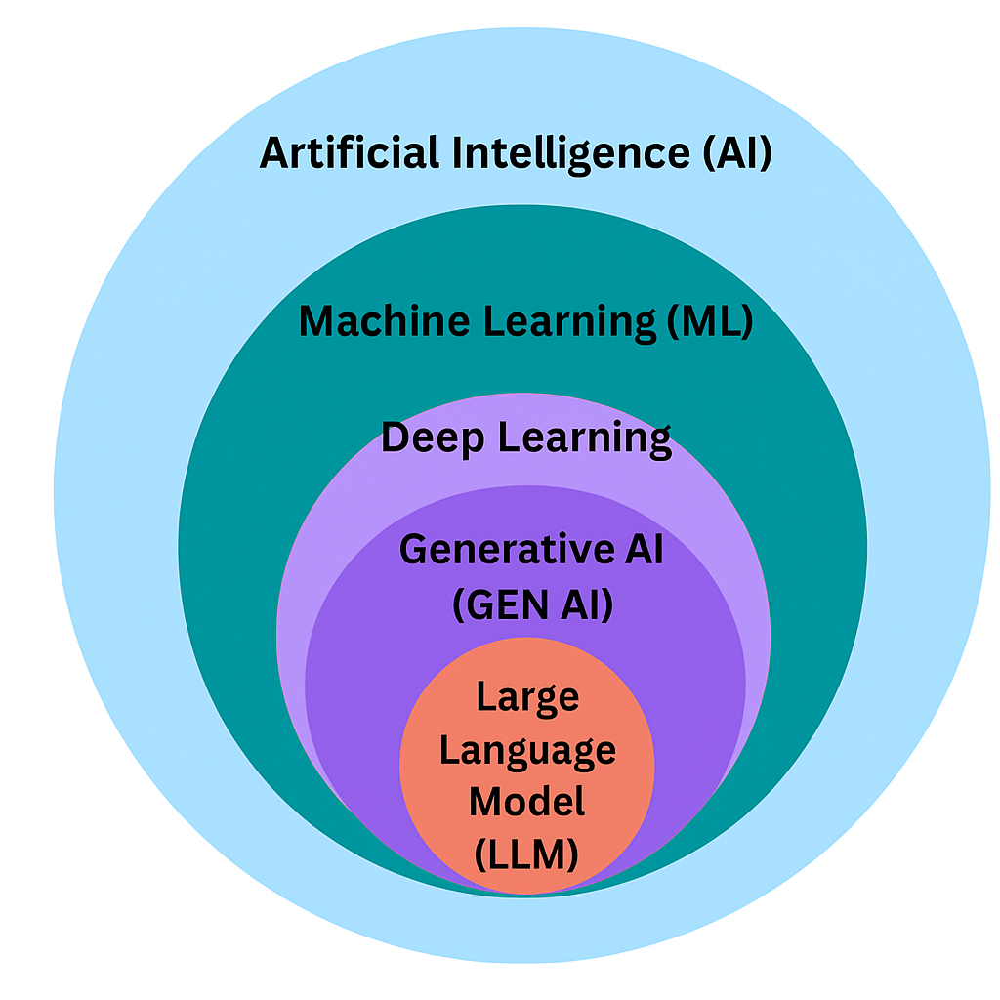
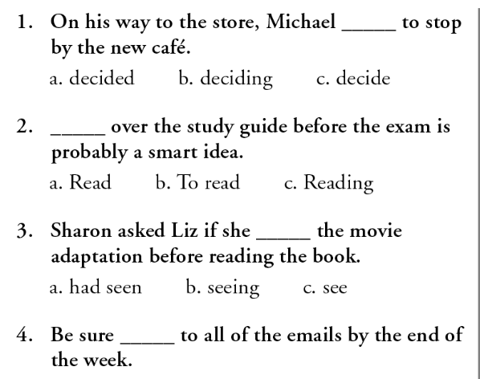
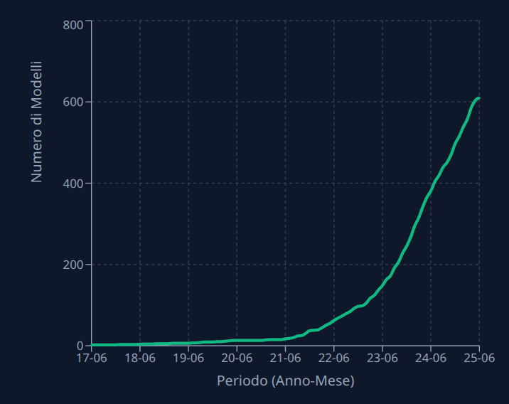

Introduzione all’Intelligenza Artificiale e agli LLM
Corso LLM - Modulo 1
Hai Usato l’Intelligenza Artificiale nelle Ultime 24 Ore?
Prima di iniziare, ti devo fare una domanda: hai usato l’intelligenza artificiale nelle ultime 24 ore?
Se stai pensando di no, probabilmente è perché quando senti “intelligenza artificiale” la tua mente va subito a ChatGPT o magari a quei robot futuristici dei film di fantascienza.
In realtà l’AI permea già ogni aspetto della nostra vita digitale, operando silenziosamente nell’ombra.
Stamattina, quando hai controllato le email, un algoritmo di machine learning ha filtrato lo spam per te. Se hai usato Google Maps, un’intelligenza artificiale ha analizzato i pattern di traffico in tempo reale per suggerirti il percorso migliore. Netflix ti ha suggerito quella serie che “stranamente” era proprio nel tuo stile? AI.
La correzione automatica che ha sistemato quel messaggio WhatsApp scritto di fretta? Ancora AI.
Instagram che ti mostra proprio i contenuti che ti interessano? Indovina un po’…
L’intelligenza artificiale non è il futuro. È il presente, ed è ovunque. Ma allora perché ChatGPT ha creato tanto scalpore?
In questo corso non tratteremo tutto il mondo AI ma ci concentreremo specificamente sugli LLM (Large Language Models), i modelli che hanno rivoluzionato il modo in cui interagiamo con i computer. Partiamo quindi con una domanda fondamentale.
Cos’è Davvero l’Intelligenza Artificiale?
L’intelligenza artificiale, nella sua essenza più pura, è qualunque sistema che cerca di risolvere problemi che normalmente richiederebbero l’intelletto umano. Non è magia, è matematica.

L’insieme più esterno rappresenta l’Intelligenza Artificiale nel suo complesso. È un territorio vasto che include anche i sistemi esperti degli anni ’80 - quei programmi dove esperti umani codificavano manualmente ogni singola regola. Un sacco di regole del tipo “se questo allora quello”, migliaia e migliaia di condizioni per cercare di catturare la conoscenza umana.
All’interno di questo grande insieme incontriamo il Machine Learning. Qui avviene la prima rivoluzione concettuale. Invece di dire al computer esattamente cosa fare in ogni situazione, gli permettiamo di imparare dai dati. È un cambio di paradigma fondamentale, come passare dall’insegnare a qualcuno a seguire una ricetta passo passo al mostrargli migliaia di piatti e lasciare che capisca da solo come cucinarli.
Il Machine Learning opera in due fasi distinte. Prima c’è l’allenamento, dove il sistema apprende dai dati, poi l’utilizzo, dove il modello addestrato viene applicato a situazioni nuove. Ma come fa un computer a “imparare”? In fondo, le macchine capiscono solo numeri. Ed è proprio qui che sta il trucco: tutto - immagini, suoni, testi - viene convertito in numeri. Il Machine Learning diventa quindi l’arte di trovare pattern significativi in oceani di numeri.
Prendiamo l’esempio del filtro antispam. L’approccio Machine Learning è radicalmente diverso: mostriamo al computer montagne di email, spam e legittime in quantità massicce. Il sistema trova da solo i pattern che le distinguono, pattern così sottili e complessi che noi umani faticheremmo a descriverli a parole.
Una tecnica di ML molto usata sono le reti neurali. Qui la storia si fa affascinante, perché gli scienziati hanno guardato al cervello umano per trovare ispirazione.
Nel nostro cervello, miliardi di neuroni comunicano tra loro attraverso impulsi elettrici. Ogni neurone riceve segnali, li elabora, e decide se “attivarsi” per passare il segnale ad altri neuroni. È un sistema di una complessità vertiginosa, frutto di milioni di anni di evoluzione.
Video 3Blue1Brown su Reti Neurali: link al video
Le reti neurali artificiali tentano di catturare l’essenza di questo processo, ma con una semplificazione estrema. Un neurone artificiale è solo una funzione matematica che prende numeri in input, li moltiplica per dei pesi - che chiamiamo parametri - e produce un numero in output.

L’Ispirazione dal Cervello: Le Reti Neurali
Andando ancora più in profondità nei nostri insiemi concentrici, dentro il Machine Learning troviamo il Deep Learning, e al suo cuore pulsano le reti neurali profonde.
Il “deep” in Deep Learning si riferisce alla profondità: invece di avere uno o due strati di neuroni, ne abbiamo decine o centinaia. E qui succede qualcosa di quasi magico. Ogni strato impara a riconoscere concetti sempre più astratti. I primi strati potrebbero riconoscere bordi e linee, i successivi forme semplici, poi parti di oggetti, fino ad arrivare agli strati finali che riconoscono concetti complessi e astratti.
Dal Linguaggio ai Numeri: Il Mondo Segreto dei Token
Ma arriviamo al cuore del problema quando parliamo di linguaggio. I computer lavorano con numeri, il linguaggio umano è fatto di parole, significati, sfumature. Come colmare questo abisso?
La risposta sta in due concetti fondamentali: token ed embedding. Un token è un “pezzo” di testo - può essere una parola intera, parte di una parola, o anche un singolo carattere - a cui viene assegnato un numero identificativo. “hello” è il token numero 24912, mentre “frutta” è spezzato in “fr” (token 1739) e “utta” (token 29215).
Questo è il tokenizzatore o200k_base usato da ChatGPT.
Ora facciamo una gara: trova la parola rappresentata con un singolo token più lunga possibile! Non valgono liste di spazi o punti, ma valgono tutte le parole. Prova a cercare parole lunghe in italiano e in inglese e confronta i risultati.
Lo scopo di questo esercizio è accorgersi che i token in inglese sono più efficienti perché gli algoritmi hanno molti più dati in inglese che in italiano. Infatti questo non è solo assegnare un ID ad ogni parola ma è trovare un modo efficiente di rappresentare il testo - una vera e propria forma di compressione linguistica.
Ma assegnare un semplice numero ID a ogni token non cattura il significato. Qui entrano in gioco gli embedding, rappresentazioni numeriche complesse che sono al cuore della “comprensione” linguistica dei modelli. Un embedding non è un singolo numero, ma un vettore di centinaia di dimensioni.


fonte: 3Blue1Brown - Vectors
Nel mondo degli LLM, gli embedding vivono in spazi vettoriali a migliaia di dimensioni, spesso tra 1024 e oltre 12.000, a seconda del modello e dell’uso.
La magia degli embedding sta nel fatto che parole con significati simili hanno embedding simili. Ma c’è di più: gli embedding cambiano in base al contesto. La parola “pesca” avrà un embedding diverso nella frase “Nel pancake adoro la pesca” rispetto a “Nel weekend adoro la pesca”. Il modello impara queste sottigliezze attraverso l’esposizione a miliardi di esempi durante l’addestramento, in questo modo la sua risposta peserà in modo diverso la parola pesca in base alle parole pancake e weekend.
Approfondimento: Understanding Text with Attention Heatmaps

Questi embedding sono così complessi e multidimensionali che nemmeno gli scienziati che li hanno creati li comprendono appieno. È parte del mistero della “black box” dell’AI: sappiamo che funziona, vediamo i risultati, ma i meccanismi interni rimangono in parte oscuri.
La Rivoluzione Transformer: Quando l’Attenzione è Tutto
Nel 2017, otto ricercatori di Google pubblicarono un paper dal titolo provocatorio: “Attention Is All You Need” - l’attenzione è tutto ciò che serve. Non potevano immaginare quanto profetico sarebbe stato quel titolo.
Prima dei Transformer, i modelli di linguaggio processavano il testo come se leggessero con una lente d’ingrandimento che mostra solo una parola alla volta, era un processo sequenziale, lento e limitato.
L’architettura Transformer rivoluzionò tutto introducendo il meccanismo di “attention”. Invece di processare sequenzialmente, il modello può “prestare attenzione” a tutte le parole contemporaneamente, capendo istantaneamente quali sono più rilevanti per il contesto. È come passare dal leggere una parola alla volta al poter abbracciare con lo sguardo l’intera pagina, focalizzandosi sui passaggi chiave.
- Attention Is All You Need: paper originale
- The Illustrated Transformer: guida visuale
L’Arte dell’Addestramento: Come Nasce un’Intelligenza Artificiale
Creare un Large Language Model è un processo che ricorda più l’educazione di una mente che la programmazione di un computer. Si svolge in tre fasi distinte, ognuna cruciale per il risultato finale.
La prima fase è il pre-training, dove il modello viene esposto a quantità di testo che sfidano l’immaginazione. Parliamo di sostanzialmente tutto ciò che è stato scritto su internet: libri, articoli, pagine web, forum, codice di programmazione. Il compito del modello in questa fase è apparentemente semplice: prevedere la parola successiva. Data la sequenza “Il gatto è sul”, deve calcolare che “tetto” è più probabile di “mangiare”.
Un po’ come negli esercizi per imparare nuove lingue…

Questo task di “next token prediction” sembra banale, ma da esso emergono capacità straordinarie. È come se imparando a prevedere la parola successiva in miliardi di contesti diversi, il modello sviluppasse una comprensione implicita della grammatica, della logica, dei fatti del mondo, persino dello stile e del tono.
La seconda fase è il supervised fine-tuning, dove il modello viene specializzato con esempi di conversazioni create da umani. Qui impara non solo a completare testi, ma a rispondere a domande, seguire istruzioni, mantenere una conversazione coerente.
La terza fase, l’alignment o allineamento, è forse la più delicata. L’allineamento è un processo ampio che mira a rendere il modello utile, sicuro e allineato con i valori umani. Durante questa fase si utilizzano diverse tecniche, tra cui il Reinforcement Learning from Human Feedback (RLHF). Con RLHF, il modello impara non solo a dare risposte corrette, ma risposte che gli umani preferiscono, attraverso un processo iterativo di feedback.
Il Prompt e le Proprietà Emergenti
Un momento importantissimo nella storia degli LLM è stato il 2020 con la pubblicazione del paper “Language Models are Few-Shot Learners” su GPT-3. Questo paper rivoluzionario, firmato da ricercatori del calibro di Ilya Sutskever e Dario Amodei, ha introdotto un concetto fondamentale: gli LLM non sono come gli altri algoritmi di Deep Learning, in particolare quelli precedenti per il Natural Language Processing.
Paper GPT-3: Language Models are Few-Shot Learners
I modelli NLP tradizionali dovevano essere addestrati su un task specifico e potevano fare solo quello. Per esempio, un modello addestrato per tradurre non poteva rispondere a domande. Gli LLM invece dimostrano la capacità emergente di riuscire a fare task che non hanno mai visto esplicitamente durante l’addestramento, grazie a pochissimi esempi di quel task nell’input e grazie a prompt in linguaggio naturale. Una totale rivoluzione che ha cambiato per sempre il mondo del NLP.
Le proprietà emergenti dimostrano che, quando queste architetture vengono scalate a miliardi di parametri, diventano molto più che semplici ‘pappagalli stocastici’ o ‘T9 sotto steroidi’
Il prompt è il testo che dai come input al modello, e lui prevederà la risposta corretta token per token. Nel pre-training il modello capisce il linguaggio, nel fine-tuning impara anche a seguire le istruzioni e mantenere lo stile chat. La combinazione di queste capacità con i prompt in linguaggio naturale ha reso possibile l’interazione intuitiva che oggi diamo per scontata.
Il 30 Novembre 2022: Il Giorno in cui gli LLM hanno incontrato il Mondo
Il 30 novembre 2022 OpenAI rilasciò ChatGPT al pubblico. GPT-3.5 era già un modello molto capace che sapeva conversare in modo naturale. Ma aveva altre tre caratteristiche vincenti: un’interfaccia conversazionale semplice e intuitiva, un eccellente allineamento che lo rendeva utile e sicuro, e soprattutto era gratuito e accessibile a chiunque.
L’impatto fu immediato e sconvolgente. Un milione di utenti in cinque giorni. Cento milioni in due mesi. Per la prima volta nella storia, gli LLM non erano più dominio esclusivo di ricercatori e grandi aziende tech. Era nelle mani di studenti, professionisti, creativi, curiosi di ogni tipo.

Quello che seguì fu paragonabile all’esplosione del Cambriano, quel periodo 540 milioni di anni fa quando la vita sulla Terra si diversificò in modo esplosivo. Anthropic lanciò Claude, Meta rilasciò LLaMA in open source, Google rispose con Bard (poi Gemini), e decine di altre aziende e gruppi di ricerca si unirono alla corsa. Da allora non solo sono usciti centinaia di nuovi modelli, ma la ricerca scientifica sull’argomento è cresciuta esponenzialmente, con migliaia di paper pubblicati ogni mese che esplorano nuove frontiere e applicazioni.
Come Funziona Davvero un LLM: La Verità Dietro la Magia
Al cuore di ogni Large Language Model c’è un task apparentemente semplice: prevedere il token successivo più probabile. Quando scriviamo “Il cielo è”, il modello calcola le probabilità: “blu” potrebbe avere il 45% di probabilità, “nuvoloso” il 30%, “stellato” il 15%, e così via.
Ma da questo task basilare emergono capacità che sembrano umane. Il modello può tradurre lingue, scrivere codice, comporre poesie, risolvere problemi matematici, persino mostrare quello che sembra ragionamento logico. Sono tutte proprietà emergenti del task fondamentale di predizione.
In un recente studio pubblicato da Anthropic (Attribution Graphs in Biology), i ricercatori hanno mostrato come i meccanismi interni siano più complessi della sola predizione. Attraverso tecniche di “circuit tracing”, hanno scoperto che nella complessità di un’architettura di deep learning che impara dal linguaggio umano emergono proprietà sorprendentemente simili al ragionamento. Anche se questo è più un ragionamento “alieno” - non è tutto e per tutto come quello degli umani - mostra capacità di pianificazione, di considerare multiple opzioni, e di costruire rappresentazioni astratte del mondo.
Questa natura probabilistica porta a fenomeni affascinanti. L’in-context learning permette al modello di “imparare” nuovi compiti semplicemente da esempi forniti nel prompt, senza modificare i suoi parametri. Il few-shot learning gli permette di generalizzare da pochissimi esempi.
Una Distinzione Cruciale
Quando usi ChatGPT o un sistema simile, è fondamentale capire che stai interagendo con tre livelli distinti. C’è il modello vero e proprio - l’AI che genera le risposte. C’è l’interfaccia - l’applicazione web o mobile attraverso cui interagisci, che può avere suoi filtri e logiche aggiuntive. E c’è il server dove fisicamente gira il modello, con tutte le implicazioni legali e di privacy che questo comporta.
Questa distinzione non è accademica. L’interfaccia può modificare o filtrare le risposte del modello. Il server determina chi ha accesso ai tuoi dati e sotto quale giurisdizione. Quando condividi informazioni sensibili con un chatbot, stai potenzialmente condividendole con tutti e tre questi livelli.
In questo video puoi vedere DeepSeek iniziare a generare una risposta, riprendersi a metà flusso, eliminare tutto e reindirizzare la conversazione: Video LinkedIn
È importante anche distinguere tra allenamento e prompt. Se il modello ha visto una pagina di Wikipedia durante il training (l’ha vista quasi sicuramente, a meno che non sia nuova), questa conoscenza è diversa da quando metti la stessa informazione nel prompt. Gli LLM non hanno un database ma hanno imparato i pattern nel linguaggio e della conoscenza umana. Potresti pensare al prompt come la memoria a breve termine (memoria di lavoro) e i dati di training come quella a lungo termine.
Glossario Essenziale
- AI (Intelligenza Artificiale)
- Qualunque sistema che risolve problemi che normalmente richiederebbero intelletto umano
- Machine Learning
- Approccio all’AI dove i sistemi imparano dai dati invece di essere programmati esplicitamente
- Deep Learning
- ML con reti neurali profonde (molti layer)
- LLM (Large Language Model)
- Modello di Deep Learning specializzato nel linguaggio, basato su architettura Transformer
- Token
- Unità base di testo processata dal modello
- Embedding
- Rappresentazione numerica complessa che cattura il “significato”
- Parametri
- Valori numerici nella rete neurale, regolati durante il training
- Transformer
- Architettura che usa il meccanismo di “attention”
- Pre-training
- Prima fase di addestramento su grandi quantità di testo
- Fine-tuning
- Specializzazione del modello per compiti specifici